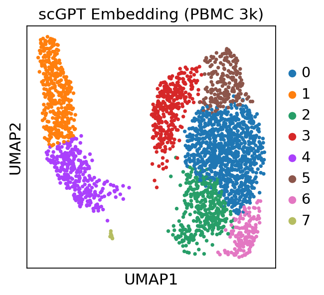

ov.fm — Unified Foundation Model API#
The ov.fm module provides a unified, model-agnostic API for working with 22 single-cell foundation models. Instead of learning each model’s unique interface, you can use the same 6-step workflow for any model:
Discover — Browse available models and their capabilities
Profile — Automatically analyze your dataset
Select — Let the system recommend the best model
Validate — Check data-model compatibility before running
Run — Execute inference with a single function call
Interpret — Generate QA metrics and visualizations
Supported models include: scGPT, Geneformer, UCE, scFoundation, CellPLM, scBERT, GeneCompass, Nicheformer, scMulan, and 13 more.
Cite: Zeng, Z. et al. (2024). OmicVerse: a framework for bridging and deepening insights across bulk and single-cell sequencing. Nature Communications, 15(1), 5983.
import omicverse as ov
import scanpy as sc
import numpy as np
import warnings
warnings.filterwarnings('ignore')
sc.settings.set_figure_params(dpi=80, facecolor='white')
sc.settings.figdir = './figures/'
Step 1: Discover Available Models#
Use ov.fm.list_models() to browse all registered foundation models. You can filter by task type to find models that support your specific analysis.
# List all available models
all_models = ov.fm.list_models()
print(f"Total models available: {all_models['count']}")
# Display as a table
import pandas as pd
df = pd.DataFrame(all_models['models'])
df[['name', 'status', 'tasks', 'species', 'zero_shot', 'gpu_required', 'min_vram_gb']]
Total models available: 22
| name | status | tasks | species | zero_shot | gpu_required | min_vram_gb | |
|---|---|---|---|---|---|---|---|
| 0 | scgpt | ready | [embed, integrate] | [human, mouse] | True | True | 8 |
| 1 | geneformer | ready | [embed, integrate] | [human] | True | False | 4 |
| 2 | uce | ready | [embed, integrate] | [human, mouse, zebrafish, mouse_lemur, macaque... | True | True | 16 |
| 3 | scfoundation | ready | [embed, integrate] | [human] | True | True | 16 |
| 4 | scbert | partial | [embed, integrate] | [human] | True | True | 8 |
| 5 | genecompass | partial | [embed, integrate] | [human, mouse] | True | True | 16 |
| 6 | cellplm | ready | [embed, integrate] | [human] | True | True | 8 |
| 7 | nicheformer | partial | [embed, integrate, spatial] | [human, mouse] | True | True | 16 |
| 8 | scmulan | partial | [embed, integrate] | [human] | True | True | 16 |
| 9 | tgpt | partial | [embed, integrate] | [human] | True | True | 16 |
| 10 | cellfm | partial | [embed, integrate] | [human] | True | True | 16 |
| 11 | sccello | partial | [embed, integrate, annotate] | [human] | True | True | 16 |
| 12 | scprint | partial | [embed, integrate] | [human] | True | True | 16 |
| 13 | aidocell | partial | [embed, integrate] | [human] | True | True | 16 |
| 14 | pulsar | partial | [embed, integrate] | [human] | True | True | 16 |
| 15 | atacformer | partial | [embed, integrate] | [human] | True | True | 16 |
| 16 | scplantllm | partial | [embed, integrate] | [plant] | True | True | 16 |
| 17 | langcell | partial | [embed, integrate] | [human] | True | True | 16 |
| 18 | cell2sentence | partial | [embed] | [human] | False | True | 16 |
| 19 | genept | partial | [embed] | [human] | True | False | 0 |
| 20 | chatcell | partial | [embed, annotate] | [human] | True | True | 16 |
| 21 | tabula | partial | [embed, annotate, integrate, perturb] | [human] | True | True | 8 |
# Filter by task: only models that support embedding
embed_models = ov.fm.list_models(task="embed")
print(f"Models supporting embedding: {embed_models['count']}")
for m in embed_models['models']:
print(f" - {m['name']:15s} species={m['species']} zero_shot={m['zero_shot']}")
Models supporting embedding: 22
- scgpt species=['human', 'mouse'] zero_shot=True
- geneformer species=['human'] zero_shot=True
- uce species=['human', 'mouse', 'zebrafish', 'mouse_lemur', 'macaque', 'frog', 'pig'] zero_shot=True
- scfoundation species=['human'] zero_shot=True
- scbert species=['human'] zero_shot=True
- genecompass species=['human', 'mouse'] zero_shot=True
- cellplm species=['human'] zero_shot=True
- nicheformer species=['human', 'mouse'] zero_shot=True
- scmulan species=['human'] zero_shot=True
- tgpt species=['human'] zero_shot=True
- cellfm species=['human'] zero_shot=True
- sccello species=['human'] zero_shot=True
- scprint species=['human'] zero_shot=True
- aidocell species=['human'] zero_shot=True
- pulsar species=['human'] zero_shot=True
- atacformer species=['human'] zero_shot=True
- scplantllm species=['plant'] zero_shot=True
- langcell species=['human'] zero_shot=True
- cell2sentence species=['human'] zero_shot=False
- genept species=['human'] zero_shot=True
- chatcell species=['human'] zero_shot=True
- tabula species=['human'] zero_shot=True
Get detailed model information#
Use ov.fm.describe_model() to get full specifications for any model, including input/output contracts, hardware requirements, and documentation links.
# Get detailed information about scGPT
info = ov.fm.describe_model("scgpt")
print("=== Model Info ===")
print(f"Name: {info['model']['name']}")
print(f"Version: {info['model']['version']}")
print(f"Tasks: {info['model']['tasks']}")
print(f"Species: {info['model']['species']}")
print(f"Embedding dim: {info['model']['embedding_dim']}")
print(f"Differentiator: {info['model']['differentiator']}")
print("\n=== Input Contract ===")
print(f"Gene ID scheme: {info['input_contract']['gene_id_scheme']}")
print(f"Gene ID notes: {info['input_contract']['gene_id_notes']}")
print(f"Preprocessing: {info['input_contract']['preprocessing']}")
print("\n=== Output Contract ===")
print(f"Embedding key: {info['output_contract']['embedding_key']}")
print(f"Embedding dim: {info['output_contract']['embedding_dim']}")
=== Model Info ===
Name: scgpt
Version: whole-human-2024
Tasks: ['embed', 'integrate']
Species: ['human', 'mouse']
Embedding dim: 512
Differentiator: Multi-modal transformer (RNA+ATAC+Spatial), attention-based gene interaction modeling
=== Input Contract ===
Gene ID scheme: symbol
Gene ID notes: Uses HGNC gene symbols. Convert Ensembl IDs to symbols if needed.
Preprocessing: Normalize to 1e4 via sc.pp.normalize_total, then bin into 51 expression bins.
=== Output Contract ===
Embedding key: obsm['X_scGPT']
Embedding dim: 512
# Compare multiple models side by side
models_to_compare = ["scgpt", "geneformer", "uce", "scfoundation", "cellplm"]
comparison = []
for name in models_to_compare:
info = ov.fm.describe_model(name)
m = info['model']
comparison.append({
'Model': m['name'],
'Embedding Dim': m['embedding_dim'],
'Gene IDs': info['input_contract']['gene_id_scheme'],
'Species': ', '.join(m['species']),
'Zero-shot': m['zero_shot_embedding'],
'GPU Required': m['hardware']['gpu_required'],
'Min VRAM (GB)': m['hardware']['min_vram_gb'],
})
pd.DataFrame(comparison)
| Model | Embedding Dim | Gene IDs | Species | Zero-shot | GPU Required | Min VRAM (GB) | |
|---|---|---|---|---|---|---|---|
| 0 | scgpt | 512 | symbol | human, mouse | True | True | 8 |
| 1 | geneformer | 512 | ensembl | human | True | False | 4 |
| 2 | uce | 1280 | symbol | human, mouse, zebrafish, mouse_lemur, macaque,... | True | True | 16 |
| 3 | scfoundation | 512 | custom | human | True | True | 16 |
| 4 | cellplm | 512 | symbol | human | True | True | 8 |
Step 2: Profile Your Data#
ov.fm.profile_data() automatically detects your dataset’s species, gene identifier scheme, modality, and checks compatibility with all registered models.
First, let’s prepare a test dataset. Important: Most foundation models expect raw counts (non-negative values). We use pbmc3k() (unprocessed) rather than pbmc3k_processed() which contains scaled/negative values.
# Load example PBMC dataset (raw counts)
adata = sc.datasets.pbmc3k()
sc.pp.filter_cells(adata, min_genes=200)
sc.pp.filter_genes(adata, min_cells=3)
print(f"Dataset: {adata.n_obs} cells x {adata.n_vars} genes")
print(f"Gene names (first 5): {adata.var_names[:5].tolist()}")
print(f"X range: [{adata.X.min():.1f}, {adata.X.max():.1f}]")
# Save to h5ad for ov.fm workflow
adata.write_h5ad("pbmc3k.h5ad")
Dataset: 2700 cells x 13714 genes
Gene names (first 5): ['AL627309.1', 'AP006222.2', 'RP11-206L10.2', 'RP11-206L10.9', 'LINC00115']
X range: [0.0, 419.0]
# Profile the dataset
profile = ov.fm.profile_data("pbmc3k.h5ad")
print("=== Data Profile ===")
print(f"Cells: {profile['n_cells']:,}")
print(f"Genes: {profile['n_genes']:,}")
print(f"Species: {profile['species']}")
print(f"Gene scheme: {profile['gene_scheme']}")
print(f"Modality: {profile['modality']}")
print(f"Has raw counts: {profile['has_raw']}")
print(f"Layers: {profile['layers']}")
print(f"Batch columns: {profile['batch_columns']}")
print(f"Cell type columns: {profile['celltype_columns']}")
=== Data Profile ===
Cells: 2,700
Genes: 13,714
Species: human (inferred)
Gene scheme: symbol
Modality: RNA
Has raw counts: False
Layers: []
Batch columns: []
Cell type columns: []
# Check compatibility with specific models
compatible_models = []
for name, compat in profile['model_compatibility'].items():
if compat['compatible']:
compatible_models.append(name)
elif compat['issues']:
print(f" {name}: {compat['issues']}")
print(f"\nCompatible models ({len(compatible_models)}): {compatible_models}")
geneformer: ['Model requires Ensembl IDs']
atacformer: ["Modality 'RNA' not supported"]
scplantllm: ["Species 'human' not supported"]
Compatible models (19): ['scgpt', 'uce', 'scfoundation', 'scbert', 'genecompass', 'cellplm', 'nicheformer', 'scmulan', 'tgpt', 'cellfm', 'sccello', 'scprint', 'aidocell', 'pulsar', 'langcell', 'cell2sentence', 'genept', 'chatcell', 'tabula']
Step 3: Automatic Model Selection#
ov.fm.select_model() analyzes your data and recommends the best model based on:
Species and gene ID compatibility
Task support and zero-shot capability
Hardware requirements
Adapter implementation readiness
# Auto-select the best model for embedding
selection = ov.fm.select_model(
"pbmc3k.h5ad",
task="embed",
prefer_zero_shot=True,
)
print("=== Recommended ===")
print(f"Model: {selection['recommended']['name']}")
print(f"Rationale: {selection['recommended']['rationale']}")
print("\n=== Fallback Options ===")
for fb in selection['fallbacks']:
print(f" - {fb['name']}: {fb['rationale']}")
print(f"\nPreprocessing: {selection['preprocessing_notes']}")
=== Recommended ===
Model: scgpt
Rationale: fully implemented adapter; matches gene symbols; supports human; zero-shot embedding (no fine-tuning needed); CPU fallback available
=== Fallback Options ===
- cellplm: fully implemented adapter; matches gene symbols; supports human; zero-shot embedding (no fine-tuning needed); CPU fallback available
- uce: fully implemented adapter; matches gene symbols; supports human; zero-shot embedding (no fine-tuning needed)
Preprocessing: Normalize to 1e4 via sc.pp.normalize_total, then bin into 51 expression bins.
# Select with VRAM constraint (e.g., 8 GB GPU)
selection_8gb = ov.fm.select_model(
"pbmc3k.h5ad",
task="embed",
max_vram_gb=8,
)
print(f"Best model for 8GB VRAM: {selection_8gb['recommended']['name']}")
print(f"Rationale: {selection_8gb['recommended']['rationale']}")
Best model for 8GB VRAM: scgpt
Rationale: fully implemented adapter; matches gene symbols; supports human; zero-shot embedding (no fine-tuning needed); CPU fallback available
Step 4: Validate Data-Model Compatibility#
Before running inference, use ov.fm.preprocess_validate() to check for potential issues and get auto-fix suggestions.
# Validate data compatibility with scGPT
validation = ov.fm.preprocess_validate(
"pbmc3k.h5ad",
model_name="scgpt",
task="embed",
)
print(f"Status: {validation['status']}")
print(f"\nDiagnostics:")
for d in validation['diagnostics']:
print(f" [{d['severity']}] {d['message']}")
if validation['auto_fixes']:
print(f"\nSuggested fixes:")
for fix in validation['auto_fixes']:
print(f" - {fix}")
else:
print("\nNo preprocessing needed — data is ready!")
Status: ready
Diagnostics:
[info] No raw counts found. Some models require unnormalized counts in .raw or layers['counts'].
No preprocessing needed — data is ready!
# Validate with a model that requires Ensembl IDs (Geneformer)
validation_gf = ov.fm.preprocess_validate(
"pbmc3k.h5ad",
model_name="geneformer",
task="embed",
)
print(f"Status: {validation_gf['status']}")
for d in validation_gf['diagnostics']:
print(f" [{d['severity']}] {d['message']}")
# Note: Geneformer requires Ensembl IDs; the diagnostic will flag this
# if your data uses gene symbols
Status: needs_preprocessing
[warning] Data has gene symbols but model requires Ensembl IDs
[info] No raw counts found. Some models require unnormalized counts in .raw or layers['counts'].
Step 5: Run Foundation Model Inference#
ov.fm.run() is the core execution function. It:
Validates data-model compatibility
Loads the model and checkpoint
Runs inference
Writes results (embeddings/annotations) back to AnnData
Records provenance metadata
5a. Using the high-level ov.fm.run() API#
# Run scGPT embedding
result = ov.fm.run(
task="embed",
model_name="scgpt",
adata_path="pbmc3k.h5ad",
output_path="pbmc3k_scgpt.h5ad",
device="auto", # auto-detect GPU/CPU
batch_size=64,
)
print(result)
[Loaded] Loaded vocabulary: 60,697 genes
[Loaded] Loaded model config from args.json
[ℹ️Info] Key Parameters Model Information:
embsize: 512
nheads: 8
d_hid: 512
nlayers: 12
n_layers_cls: 3
[Preprocessing] Analyzing model checkpoint for n_cls inference...
[Warning] No classifier layers found in checkpoint
[ℹ️Info] Using default n_cls=50
[Warning] Loading compatible weights only
[Loaded] Compatible weights loaded: 135/163
[Warning] Some weights incompatible (28)
[ℹ️Info] Model classes: 50
[Loaded] Model ready on cuda
[Preprocessing] Filtering genes by vocabulary
[ℹ️Info] Matched 12300/13714 genes
[Loaded] Retained 12300 genes
[Loaded] Preprocessor initialized
n_bins: 51, normalize: 10000.0
[ℹ️Info] Data inspection - Mean: 2279.3, Range: [0.000, 419.000]
[ℹ️Info] Auto-detected: raw counts
[Loaded] Decision: applying normalization
[Loaded] Will apply normalization
[Preprocessing] Applying preprocessing pipeline
Normalizing total counts ...
Log1p transforming ...
Binning data ...
[Loaded] Preprocessing completed
[Loaded] Binned data: (2700, 12300), 51 unique values
[🔬Cells] Data Summary:
Cells: 2,700
Genes: 12,300
[Embedding] Starting get_embeddings...
cells: 2,700
genes: 12,300
[Preprocessing] Filtering genes by vocabulary
[ℹ️Info] Matched 12300/12300 genes
[Loaded] Retained 12300 genes
[ℹ️Info] Data already preprocessed, skipping
[ℹ️Info] Using existing preprocessed data
Data shape: (2700, 12300)
Data range: [0.000, 50.000]
Gene IDs: 12300 genes mapped
[Preprocessing] Tokenizing data...
Tokenized: 2700 cells x 1200 tokens
Created dataloader: 43 batches (batch_size=64)
[Predicting] Running model inference...
Batch shape: torch.Size([64, 1200])
Padding tokens: 25405
Embeddings: 512 dimensions
Predictions: 1 classes for 2,700 cells
[Warning] All cells predicted as class 46
[ℹ️Info] Logits analysis: mean=0.032, std=0.594
[ℹ️Info] Dominant class: 46
Extracted embeddings: (2700, 512)
[✅Complete] get_embeddings completed successfully!
[✅Complete] Results summary:
embedding_shape: (2700, 512)
embedding_dim: 512
{'status': 'success', 'output_path': 'pbmc3k_scgpt.h5ad', 'output_keys': ['X_scGPT'], 'n_cells': 2700, 'device': 'cuda'}
# Load results and visualize
adata_scgpt = sc.read_h5ad("pbmc3k_scgpt.h5ad")
print(f"Embedding key: X_scGPT")
print(f"Embedding shape: {adata_scgpt.obsm['X_scGPT'].shape}")
# Compute UMAP from scGPT embeddings
sc.pp.neighbors(adata_scgpt, use_rep='X_scGPT')
sc.tl.umap(adata_scgpt)
# Cluster for visualization
sc.tl.leiden(adata_scgpt, resolution=0.5)
sc.pl.umap(adata_scgpt, color=['leiden'], title='scGPT Embedding (PBMC 3k)')
Embedding key: X_scGPT
Embedding shape: (2700, 512)
{kind=link}

5b. Using the low-level ov.llm.SCLLMManager API#
For more fine-grained control (fine-tuning, cell type annotation, custom preprocessing), you can use the model-specific SCLLMManager interface directly.
# Low-level API: direct model access via ov.llm.SCLLMManager
# This gives you finer-grained control over the model pipeline.
#
# manager = ov.llm.SCLLMManager(
# model_type="scgpt",
# model_path="path/to/scgpt/checkpoint",
# )
#
# # Get embeddings with full control
# adata = sc.read_h5ad("pbmc3k.h5ad")
# embeddings = manager.get_embeddings(adata, batch_size=64)
# adata.obsm['X_scGPT'] = embeddings
#
# # Fine-tune on reference data
# ref_adata = adata[adata.obs['celltype'].isin(['CD4 T', 'CD8 T', 'B'])]
# manager.fine_tune(train_adata=ref_adata, task="annotation", epochs=5)
#
# # Predict cell types
# predictions = manager.predict_celltypes(adata)
print("See ov.llm.SCLLMManager documentation for low-level API usage.")
See ov.llm.SCLLMManager documentation for low-level API usage.
Step 6: Interpret Results#
ov.fm.interpret_results() generates QA metrics for model outputs, including embedding dimensionality, silhouette scores, and provenance tracking.
# Interpret results from the scGPT run
interpretation = ov.fm.interpret_results(
"pbmc3k_scgpt.h5ad",
task="embed",
)
print("=== QA Metrics ===")
print(f"Cells: {interpretation['metrics']['n_cells']:,}")
print(f"Genes: {interpretation['metrics']['n_genes']:,}")
if 'embeddings' in interpretation['metrics']:
for key, info in interpretation['metrics']['embeddings'].items():
print(f"\nEmbedding '{key}':")
print(f" Dimensions: {info['dim']}")
print(f" Cells: {info['n_cells']}")
if 'silhouette' in info:
print(f" Silhouette score: {info['silhouette']:.4f}")
if 'provenance' in interpretation['metrics']:
print(f"\nProvenance: {interpretation['metrics']['provenance']}")
=== QA Metrics ===
Cells: 2,700
Genes: 12,300
Embedding 'X_scGPT':
Dimensions: 512
Cells: 2700
Multi-Model Comparison#
One of the key strengths of ov.fm is the ability to run multiple models on the same dataset and compare results. The example below demonstrates this with models that have adapters installed. Models that are not installed will return a graceful error message instead of crashing.
Note: Each model requires its own dependencies and checkpoints. Install models following their respective documentation before running.
# Run multiple models on the same dataset
# Only models with installed adapters will succeed; others return graceful errors
models_to_run = ["scgpt", "geneformer", "uce"]
results = {}
for model_name in models_to_run:
print(f"\n{'='*50}")
print(f"Running {model_name}...")
result = ov.fm.run(
task="embed",
model_name=model_name,
adata_path="pbmc3k.h5ad",
output_path=f"pbmc3k_{model_name}.h5ad",
device="auto",
)
results[model_name] = result
if 'error' in result:
print(f" Status: {result['error']}")
else:
print(f" Status: {result.get('status', 'unknown')}")
print(f" Output: {result.get('output_keys', [])}")
==================================================
Running scgpt...
[Loaded] Loaded vocabulary: 60,697 genes
[Loaded] Loaded model config from args.json
[ℹ️Info] Key Parameters Model Information:
embsize: 512
nheads: 8
d_hid: 512
nlayers: 12
n_layers_cls: 3
[Preprocessing] Analyzing model checkpoint for n_cls inference...
[Warning] No classifier layers found in checkpoint
[ℹ️Info] Using default n_cls=50
[Warning] Loading compatible weights only
[Loaded] Compatible weights loaded: 135/163
[Warning] Some weights incompatible (28)
[ℹ️Info] Model classes: 50
[Loaded] Model ready on cuda
[Preprocessing] Filtering genes by vocabulary
[ℹ️Info] Matched 12300/13714 genes
[Loaded] Retained 12300 genes
[Loaded] Preprocessor initialized
n_bins: 51, normalize: 10000.0
[ℹ️Info] Data inspection - Mean: 2279.3, Range: [0.000, 419.000]
[ℹ️Info] Auto-detected: raw counts
[Loaded] Decision: applying normalization
[Loaded] Will apply normalization
[Preprocessing] Applying preprocessing pipeline
Normalizing total counts ...
Log1p transforming ...
Binning data ...
[Loaded] Preprocessing completed
[Loaded] Binned data: (2700, 12300), 51 unique values
[🔬Cells] Data Summary:
Cells: 2,700
Genes: 12,300
[Embedding] Starting get_embeddings...
cells: 2,700
genes: 12,300
[Preprocessing] Filtering genes by vocabulary
[ℹ️Info] Matched 12300/12300 genes
[Loaded] Retained 12300 genes
[ℹ️Info] Data already preprocessed, skipping
[ℹ️Info] Using existing preprocessed data
Data shape: (2700, 12300)
Data range: [0.000, 50.000]
Gene IDs: 12300 genes mapped
[Preprocessing] Tokenizing data...
Tokenized: 2700 cells x 1200 tokens
Created dataloader: 43 batches (batch_size=64)
[Predicting] Running model inference...
Batch shape: torch.Size([64, 1200])
Padding tokens: 25405
Embeddings: 512 dimensions
Predictions: 1 classes for 2,700 cells
[Warning] All cells predicted as class 46
[ℹ️Info] Logits analysis: mean=0.032, std=0.594
[ℹ️Info] Dominant class: 46
Extracted embeddings: (2700, 512)
[✅Complete] get_embeddings completed successfully!
[✅Complete] Results summary:
embedding_shape: (2700, 512)
embedding_dim: 512
Status: success
Output: ['X_scGPT']
==================================================
Running geneformer...
[Loaded] Geneformer model initialized (version: V1)
[Loading] Loading Geneformer model
[Loaded] Tokenizer initialized with external dictionary files
[Loaded] Geneformer model loaded successfully
[🔬Cells] Data Summary:
Cells: 2,700
Genes: 13,714
[Embedding] Starting get_embeddings...
cells: 2,700
genes: 13,714
[Preprocessing] Preprocessing data for Geneformer...
[Loaded] Normalized total counts
[Preprocessing] Preprocessing completed: 2700 cells × 13714 genes
[Predicting] Extracting cell embeddings with Geneformer...
[Preprocessing] Converting data to Geneformer format
[Preprocessing] Preparing data for Geneformer tokenization
[Preprocessing] Adding ensembl_id column to adata.var
[Warning] Using gene symbols as ensembl_id (may cause filtering)
[ℹ️Info] Geneformer works best with Ensembl gene IDs
[ℹ️Info] Gene mapping analysis:
[Preprocessing] Proactive gene symbol mapping...
[Loaded] Successfully mapped 12337 genes to Ensembl IDs
[Warning] Adding n_counts column to adata.obs...
✓ Added n_counts: mean=9930.5, std=29.1
[Preprocessing] Adding cell_barcode column to preserve cell identity...
✓ Added cell_barcode column with 2700 barcodes
[Preprocessing] Tokenizing data for Geneformer
[Preprocessing] Attempting real Geneformer tokenization...
/tmp/tmpbnndlcmi/input/temp_data.h5ad has no column attribute 'filter_pass'; tokenizing all cells.
[Loaded] Tokenized 2700 cells
Creating dataset.
[Training] Extracting embeddings...
[Loaded] Using all 2700 cells (preserving order)
Status: Execution failed: Embedding extraction failed: CUDA out of memory. Tried to allocate 2.47 GiB. GPU 0 has a total capacity of 15.77 GiB of which 687.00 MiB is free. Process 3532911 has 1.49 GiB memory in use. Process 3551867 has 1.49 GiB memory in use. Including non-PyTorch memory, this process has 12.11 GiB memory in use. Of the allocated memory 9.90 GiB is allocated by PyTorch, and 1.84 GiB is reserved by PyTorch but unallocated. If reserved but unallocated memory is large try setting PYTORCH_ALLOC_CONF=expandable_segments:True to avoid fragmentation. See documentation for Memory Management (https://pytorch.org/docs/stable/notes/cuda.html#environment-variables)
==================================================
Running uce...
[Loaded] UCE model initialized
[Loading] Loading UCE model and assets
[Loading] === UCE Asset Files Validation ===
[Loaded] ✓ Model weights: /home/kblueleaf/.cache/omicverse/models/uce/4layer_model.torch
[Loaded] ✓ Token embeddings: /home/kblueleaf/.cache/omicverse/models/uce/token_to_pos.torch
[Loaded] ✓ Species chromosome mapping: /home/kblueleaf/.cache/omicverse/models/uce/species_chrom.csv
[Loaded] ✓ Species offsets: /home/kblueleaf/.cache/omicverse/models/uce/species_offsets.pkl
[Loaded] ✓ Protein embeddings directory: /home/kblueleaf/.cache/omicverse/models/uce/protein_embeddings
[Loaded] ✓ Found protein embedding: Homo_sapiens.GRCh38.gene_symbol_to_embedding_ESM2.pt
[Loaded] ✓ Found protein embedding: Mus_musculus.GRCm39.gene_symbol_to_embedding_ESM2.pt
[Loading] === UCE Configuration ===
[Loaded] • Species: human
[Loaded] • Batch size: 25
[Loaded] • Model layers: 4
[Loaded] • Output dimension: 1280
[Loaded] • Token dimension: 5120
[Loaded] • Hidden dimension: 5120
[Loading] === UCE Configuration ===
[Loaded] ✓ Protein embeddings directory: /home/kblueleaf/.cache/omicverse/models/uce/protein_embeddings
[Loaded] ✓ Created new_species CSV: /tmp/new_species_protein_embeddings.csv
[Loaded] ✓ Found existing new_species CSV: /home/kblueleaf/.cache/omicverse/models/uce/new_species_protein_embeddings.csv
[Loaded] ✓ UCE configuration completed successfully
[Loading] Initializing UCE TransformerModel for fine-tuning
[Loaded] UCE TransformerModel initialized successfully
[Loaded] UCE model loaded successfully
[Embedding] Extracting cell embeddings using UCE
[Embedding] Processing data in memory
[Embedding] UCE model loaded and ready for inference
[Embedding] Creating UCE dataset in memory
[Embedding] Extracted embeddings: (2700, 1280)
Status: success
Output: ['X_uce']
# Compare embeddings visually (only for successfully run models)
import matplotlib.pyplot as plt
import os
successful_models = [m for m in models_to_run if os.path.exists(f"pbmc3k_{m}.h5ad") and 'error' not in results.get(m, {})]
if successful_models:
fig, axes = plt.subplots(1, len(successful_models), figsize=(6*len(successful_models), 5))
if len(successful_models) == 1:
axes = [axes]
for i, model_name in enumerate(successful_models):
adata_m = sc.read_h5ad(f"pbmc3k_{model_name}.h5ad")
info = ov.fm.describe_model(model_name)
emb_key = info['output_contract']['embedding_key'].split("'")[1]
sc.pp.neighbors(adata_m, use_rep=emb_key)
sc.tl.umap(adata_m)
sc.tl.leiden(adata_m, resolution=0.5)
sc.pl.umap(adata_m, color='leiden', ax=axes[i],
title=f"{model_name} ({adata_m.obsm[emb_key].shape[1]}d)",
show=False)
plt.tight_layout()
plt.show()
else:
print("No models completed successfully for comparison.")
{kind=link}
# Quantitative comparison: silhouette scores
from sklearn.metrics import silhouette_score
comparison_results = []
for model_name in successful_models:
adata_m = sc.read_h5ad(f"pbmc3k_{model_name}.h5ad")
info = ov.fm.describe_model(model_name)
emb_key = info['output_contract']['embedding_key'].split("'")[1]
emb = adata_m.obsm[emb_key]
# Use leiden clusters for silhouette score
if 'leiden' not in adata_m.obs:
sc.pp.neighbors(adata_m, use_rep=emb_key)
sc.tl.leiden(adata_m, resolution=0.5)
sil = silhouette_score(emb, adata_m.obs['leiden'])
comparison_results.append({
'Model': model_name,
'Embedding Dim': emb.shape[1],
'Silhouette Score': round(sil, 4),
})
pd.DataFrame(comparison_results)
| Model | Embedding Dim | Silhouette Score | |
|---|---|---|---|
| 0 | scgpt | 512 | 0.1540 |
| 1 | uce | 1280 | 0.1691 |
Advanced: Custom Checkpoint Paths#
By default, ov.fm looks for checkpoints in ~/.cache/omicverse/models/<model_name>/. You can override this via:
The
checkpoint_dirparameter inov.fm.run()Environment variables:
OV_FM_CHECKPOINT_DIR_SCGPT,OV_FM_CHECKPOINT_DIR_GENEFORMER, etc.A global base directory:
OV_FM_CHECKPOINT_DIRwith model-named subfolders
# Using a custom checkpoint directory (example - adjust path for your setup)
# result = ov.fm.run(
# task="embed",
# model_name="scgpt",
# adata_path="pbmc3k.h5ad",
# output_path="pbmc3k_scgpt_custom.h5ad",
# checkpoint_dir="/path/to/my/scgpt/checkpoint",
# )
print("Adjust checkpoint_dir to your local path before running.")
Adjust checkpoint_dir to your local path before running.
Advanced: Conda Subprocess Isolation#
Some models have conflicting dependencies. ov.fm supports running models in isolated conda environments via subprocess. If a conda env named scfm-<model_name> exists (e.g., scfm-scgpt), ov.fm.run() will automatically use it.
# Create an isolated environment for a model
conda create -n scfm-scgpt python=3.10
conda activate scfm-scgpt
pip install omicverse scgpt
To disable conda subprocess execution:
import os
os.environ['OV_FM_DISABLE_CONDA_SUBPROCESS'] = '1'
Advanced: Plugin System#
You can register custom models with ov.fm via the plugin system.
Entry-point plugins (pip packages)#
In your package’s pyproject.toml:
[project.entry-points."omicverse.fm"]
my_model = "my_package.fm_plugin:register"
Local plugins#
Place a Python file in ~/.omicverse/plugins/fm/:
# Example: registering a custom model plugin
from omicverse.fm.registry import ModelSpec, TaskType, Modality, SkillReadyStatus, OutputKeys
# Define model spec
my_spec = ModelSpec(
name="my_custom_model",
version="v1.0",
skill_ready=SkillReadyStatus.READY,
tasks=[TaskType.EMBED],
modalities=[Modality.RNA],
species=["human"],
output_keys=OutputKeys(embedding_key="X_my_model"),
embedding_dim=256,
)
# Register it
registry = ov.fm.get_registry()
registry.register(my_spec, source="user")
# Now it appears in list_models
custom = [m['name'] for m in ov.fm.list_models()['models'] if 'custom' in m['name']]
print(f"Registered custom models: {custom}")
Registered custom models: ['my_custom_model']
Model Quick Reference#
Model |
Dim |
Gene IDs |
Species |
Key Strength |
|---|---|---|---|---|
scGPT |
512 |
Symbol |
human, mouse |
Multi-modal (RNA+ATAC+Spatial), attention maps |
Geneformer |
512 |
Ensembl |
human |
CPU-capable, rank-value encoding, network biology |
UCE |
1280 |
Symbol |
7 species |
Broadest species support, protein structure embeddings |
scFoundation |
512 |
Custom |
human |
Perturbation/drug response, xTrimoGene architecture |
CellPLM |
512 |
Symbol |
human |
Fastest inference, cell-centric (not gene-centric) |
scBERT |
200 |
Symbol |
human |
Lightest model, 200-dim compact embeddings |
Nicheformer |
512 |
Symbol |
human, mouse |
Spatial-aware, niche modeling |
scMulan |
512 |
Symbol |
human |
Native multi-omics (RNA+ATAC+Protein) |
For the full list of 22 models, run ov.fm.list_models().
API Reference Summary#
Function |
Purpose |
|---|---|
|
Browse available models, filter by task |
|
Get full model spec and I/O contract |
|
Auto-detect species, gene scheme, modality |
|
Recommend best model for your data |
|
Check compatibility, get fix suggestions |
|
Execute inference |
|
Generate QA metrics and visualizations |